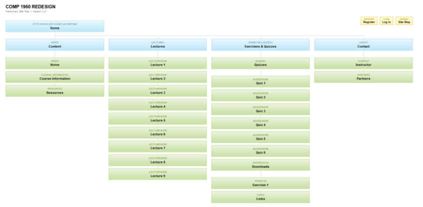

COMP1950 GROUPWORK META-SITE
Introduction
The project's assignment was to create a completely new redesign of the current COMP 1950 website. This page will lead you through your new designed internet presence. Our team tried the best to fulfill all your requirements. We created a modern index page where your users will have direct access to the most used parts of your sites like assignments, quizzes and lectures. Our team consists of three guys who already successfully completed COMP1850. In the following you can see how we shared the work. Here must be said that we cannot completely say who wrote which exact line in the code but we tried to figure out who did most in which part of the project.
Nasrulla Nasrulla
- Protosite Design
- Lecture pages
- Protosite Footer
- Aside, Login, etc.
Jason Ngan
- Index page
- Protosite Header
- Colour Design
- Meta-site Content
Sven Schebitz
- Meta-site Design
- Meta-site Content
- Quizpage
- .htaccess file
Protosite
Here you can see a screenshot of your new index page. If you click on the picture you will be directed to the project. Have fun discovering all the new features and designes that come with it!
Sitemap
The new design of your BCITCOMP 1950 internet presence contains an easy-to-use five-divided navigation.
Rationale
The theme of our website is focused on delivering on three areas: looking professional, being useful, and being easy to use. Our design decisions are centered around these three core requirements.
Our idea of professionalism is "to get work done". When students visit the website, they expect to be able to find the information they are looking for, get what they need, finish the job, and leave the page. We accommodate these students with our relatively simple design that focuses on making content easy to absorb. All articles are visually separated with an obvious blue background and surrounded by a black border to keep articles separate. We also chose to primarily utilize the colour scheme of blue, white, and black to both reflect BCIT's theme colours in their logo, and to keep the layout from being a mass of distracting and clashing colours. Here is a list of what we implemented for the website:
- Utilized the colour scheme of BCIT's logo: BCIT blue, white, and black
- Representative icon that matches content colour scheme and describes what our website is about
- Header colour scheme that matches content colour scheme
- Log-in system easily noticeable in the header
- Navigation menu options easily distinguishable and understood
- Article headers easy to read and visually separate from each other for easy browsing
- Aside is on the side and visually different from content
- Hover effects to easily see what is a link and can be clicked
- Simple effects to maintain focus on professionalism, while providing feedback on user actions
- Footer visually distinct with information and sections easy to identify
As a website designed to support students in COMP1950, it is important that the website provide information that students need access to. This is an area that the former website excelled at, and we aimed to keep the former, useful content while adding more. From the former website, we brought over the primary elements such as the lecture notes, assignment and exercise downloads, and course administration information. However, we decided to add online quizzes and a log-in system to help bring all the related course material in one place. Unfortunately, there were also some features we could not implement in time. All features, including those not implemented, are listed below:
- Lecture notes for each lesson (content from previous website)
- Assignment downloads (content from previous website)
- Exercise downloads (content from previous website)
- Course administration information (content from previous website)
- Web resources (content from previous website)
- Online quizzes
- Log-in system
- Access grades for assignments and quizzes (not implemented)
We also wanted our website to be easy to navigate so that students can easily find what they are looking for. With that goal in mind, we designed a simple navigation bar containing the three primary reasons for visiting the website: getting lecture notes, downloading assignments, and using the new online quiz feature. The "Home" menu item was added to help students easily get back to the main page if desired, and the "About" menu item was added for students to get course administration information quickly, although they will most likely only need it once. The landing page gives a brief introduction to the website and provides three visual buttons to access the three most frequently accessed content. These three buttons used Javascript to load the associated page.
The navigation bar was chosen to be horizontal and at the top so that students can access the page and immediately see how the web content is separated. From there, they can easily narrow down their selection until they find the content they are looking for. If the navigation bar was elsewhere, such as on the side, it may take longer for them to find which link leads closer to their target content. For further convenience, the navigation bar will stick to the top of the browser when scrolling down, providing students with a way to easily change categories (downloaded Javascript code from ScrollToFix)
Each category also aims to provide as much information up front to help students narrow down which link they should access. In "Lectures", students are faced with three more categories, "Lecture Notes", "Exercises", and "Resources". If students are interested in going through the lecture notes, they can easily find the appropriate lecture, although classes in the future have their content locked, with a date indicating when it will be unlocked. Furthermore, we chose to move Exercises and Resources from inside individual lecture pages into the "Lessons" front page so that students do not have to crawl through each lecture to find that one exercise or resources they were looking for (although the exercises and resources are still linked in the lecture notes themselves).
When looking at a specific lecture page, we also included a Table of Contents at the top so that students can visit a specific topic and put an aside that contains easy access to the lecture's exercises and resources.
When visiting the Assignments page, students no longer have to go to a specific lecture to download the assignment. Instead, each assignment is on the front of the Assignments page, with a brief description, due date, and download link all there.
The Quizzes page is similar to the Assignment page, with a due date and link to the online quiz that is easily accessible. Once in the quiz, students can log-in and complete it on the spot, typing their answers directly in the forms and submitting it at the end directly to the professor's email.
The last category, the About page, features all the necessary course information in separate categories that are easy to absorb and find.
Finally, the footer contains a more comprehensive menu for the most frequently visited and useful pages.
Here is a list of design decisions, including those that were not implemented:
- Simple navigation bar with three most frequently visited categories
- Lecture notes categorized by week, with exercises and resources easily accessible
- Table of contents and lecture exercises and resources to help students navigate the lecture and find what they need
- Assignments with download links and due dates all in one place
- Online quizzes easily accessible and completed on the spot
- Course administration information all gathered in one place
- Footer with frequently visited and useful pages
- One-click download of all lecture notes to a pdf file for students when they want to copy all the lectures for reference (not implemented)
- Automatic submission to instruction by email when submitting quiz (not implemented)